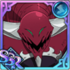

Patch Notes

Table of Content
Information
1. The overall score system Guild Boss Kerak is based on highest point obtained and not cumulative points as seen from Guild Boss Season 1.
2. The highest point is an addition of base points, mission points and score points obtained.
- Base points are given according to the difficulty - (Normal/Hard/Extreme) cleared
- Mission points are given according to the number of bonus missions you cleared. There will be new bonus missions every week for all the difficulties.
- Score points are calculated from scoring criteria
3. There are NO MORE unit restrictions - you can use the same units over and over again.
4. You will get personal rewards based on your highest point.
* See tables below for breakdown of scoring systemBase Points
| Difficulty | Base Points |
|---|---|
| Normal | 50 |
| Hard | 120 |
| Extreme | 240 |
Mission Points (week of 1 Dec - 7 Dec)
| Normal | |
|---|---|
| Mission 1: Clear with all girls in the team | +10 |
| Mission 2: Use 1 or more blue units in the team | +15 |
| Mission 3: Attack with blue characters 3 times | +35 |
| Hard | |
|---|---|
| Mission 1: Use 1 or more fairy clan character in the team | +20 |
| Mission 2: Use 2 rank 3 skills | +40 |
| Mission 3: Attack with green characters 3 times | +90 |
| Extreme | |
|---|---|
| Mission 1: Land the final blow with a giant clan character | +50 |
| Mission 2: Clear with all units above 40% HP | +100 |
| Mission 3: Clear with a team below 160k CP | +200 |
Score Points
| Criteria | Score |
|---|---|
| Moving of skills | +1 point |
| Skipping of skills | +5 points |
| Ranking up skills by stacking | +2 points |
| Use a rank 1 skill | +1 points |
| Use a rank 2 skill | +2 points |
| Use a rank 3 skill | +8 points |
| Use an ultimate skill | +10 points |
| Use a debuff Note 1: if the skill applies multiple debuffs, points will be counted for each debuff applied (e.g.: using a skill that grants 3 debuff will grant you 5x3=15 points) Note 2: even if the debuff does not overwrite the current debuff, the points will still be accounted for (e.g.: using an attack seal when there is an existing attack seal debuff will still grant you +5 points) |
+5 points |
| Use a buff Note 1: if the skill applies multiple buffs, points will be counted for the number of buffs applied (e.g.: using a skill that grants 3 buff will grant you 8x3=24 points) Note 2: even if the buff does not overwrite the current buff, the points will still be accounted for (e.g.: using a skill that gives you 1 buff when there is an existing buff will still grant you +8 points) |
+8 points |
| Use a healing skill Note: healing skill is a skill type, King's 2nd skill at rank 1 is still a healing skill even if there is no HP recovered |
+5 points |
| Occurance of a crit Note: multihitting skills critting on all hits is still counted as 1 crit |
+4 points |
| Leftover HP | Finish with as much as health as possible |
| Turns used n3÷2 where n = turns used | 1 turn: -1 2 turns: -4 3 turns: -14 4 turns: -32 5 turns: -63 6 turns: -108 7 turns: -172 8 turns: -256 9 turns: -365 10 turns: -500 11 turns: -666 points |
Tips
Normal/Hard
As seen from the scoring table, using buffs will give you a lot of scores. The main strategy to get high points is to spam buffs.
Red Arthur's 2nd skill on rank 2 or 3, which gives 3 buffs per ally on rank 2 (3x4x8=96 points in total), and 4 buffs per ally on rank 3 (4x4x8=128 points in total).
Blue Elihawk's 2nd skill also comes in very handy at rank 2 and 3.
In order to get the most out of these 2 skills, having a coin Gowther in the team willl speed up the process of getting rank 2 or 3 cards by a lot, this way, you will gain more score points in a shorter amount of time (you will be less penalized for turns used).
The last optimal character for normal/hard is green Helbram, since he buffs ATK-related stats instead of red Arthur's raw ATK, HP and DEF.
However, in the grand scheme of things, blue Elaine and green Gilthunder can also be used due to how to scoring criteria works - you will still get the same amount of buff bonus scores as using Helbram.
Extreme
The way to get high points in Extreme isn't very different from Normal/Hard, however, it is better to replace green Helbram with blue Lilia for healing. For those without her, coin King is a decent replacement. For those without blue Demon Meliodas, coin Demon Meliodas can also be a budget replacement.
Possible high scoring team comps:
1. Coin Gowther, blue Elihawk, blue Lilia, red Arthur
2. Coin Gowther, blue Elihawk, coin King, red Arthur
3. Coin Gowther, blue Demon Meliodas, blue Lilia, red Arthur
4. Coin Gowther, Galand, blue Lilia, red Arthur
Recommended Generic Units
| Normal/Hard |

|
| Extreme |

|
Kerak Extreme Information
Phase 1:
Attack: 4,817
Defense: 11,548
HP: 205,150
Skills:
• Painful Chop: Inflicts 220%/360% of Kerak's ATK on a single enemy, infect the target for 1/2 turn(s).
• Heavy Stick: Inflict 210% of Kerak's ATK to a single enemy, poison the target for 3 turns.
• Breath Pollution: Inflict 150% of Kerak's ATK to all enemies and lifesteal 100% of damage dealt.
• Dirty Shout: Reduces all enemy DEF-related stats by 20% for 2 turns.
• Ultimate - Destroy Hope: Inflict 385% of Kerak's ATK to the weakness of a single enemy.
Special Abilities:
• Purgatory Power: Use "Sharp Knife" every 3 turns
• Ominous Feeling: Use "Shake Poison" every 4 turns
• Increase Skill Usage: Increases skill usage twice.
• Ailment Cleanse: At the start of Kerak's turn, cleanse the effects of petrification/freeze/stun.
• Immunity to Effects: sealing of buff/debuff skills, sealing of recovery skills/infect/freeze/pressure/HP-related stats reduction effects.
Phase 2:
Attack: 7,708
Defense: 17,964
HP: 287,210
Skills:
• Painful Chop: Inflicts 220%/360% of Kerak's ATK on a single enemy, infect the target for 1/2 turn(s).
• Breath Pollution: Inflict 108% of Kerak's ATK to all enemies, poison the targets for 3 turns.
• Sharp Knife: Inflict 150% of Kerak's ATK to all enemies and lifesteal 100% of damage dealt.
• Shake Poison:
• Ultimate - Condense Big Bang: Inflict 210% of Kerak's ATK to the weakness of all enemies.
Special Abilities:
• Purgatory Power: Use "Sharp Knife" every 3 turns
• Ominous Feeling: Use "Shake Poison" every 4 turns
• Increase Skill Usage: Increases skill usage twice.
• Ailment Cleanse: At the start of Kerak's turn, cleanse the effects of petrification/freeze/stun.
• Immunity to Effects: sealing of buff/debuff skills, sealing of recovery skills/infect/freeze/pressure/HP-related stats reduction effects.
• Damage Reduction: Reduce damage taken from ultimate attacks by 30%.